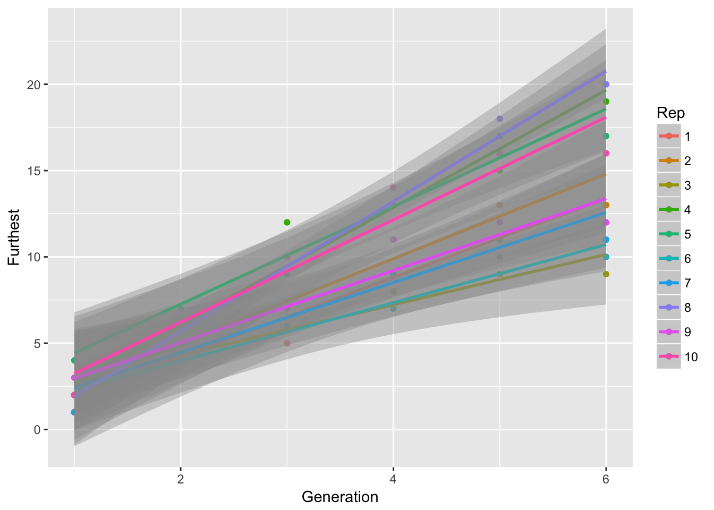

11 8 May 2027
11.1 Dispersal evolution in beetle experiments
Just read the papers from Brett’s and TEX’s labs. As Jen said, their “no evolution” treatment was spatial shuffling, so didn’t maintain the original genetic composition.
They both found increased mean and increased variance with evolution. Both found increased dispersal ability at the edge of the evolving populations; the flour beetle experiment also found a reduction in low-density growth rate.
The effects on dispersal are explained as spatial sorting; the growth rate effects are hypothesized to represent “gene surfing”, whereby deleterious alleles exposed by founder effects at the leading edge are carried forward by the fact that next generation’s leading edge is primarily founded by this generation’s leading edge.
The flour beetle experiment found that the among-replicate variance in cumulative spread grew faster than linearly. This is consistent with among-replicate differences in mean speeds (which would generate a quadratic growth in variance through time). This pattern was found in both treatments, suggesting that it’s not just a consequence of founder effects at the leading edge. Perhaps it represents founder effects in the initial establishment from the stock population (each replicate was founded by 20 individuals). The bean beetle experiment doesn’t show this graph but found strong support for a random effect for replicate speed in their model for cumulative spread.
So a couple of things to do (both for Ler and the evolution experiments):
- Plot mean and variance of cumulative spread against time
- Fit the bean beetle model (as a first approximation to be quick I can treat rep as a fixed effect).
11.2 Ler cumulative spread
To facilitate the above analyses, I have modified the script for popLer to make categorical versions of Generation and Replicate (Gen and Rep, respectively), and put the guts of last time’s data manipulation into a munge script, which creates LerC_spread containing cumulative and per-generation spread for the C treatment replicates.
Let’s calculate the means and variances of cumulative spread:
cum_spread_stats <- group_by(LerC_spread, Gap, Gen, Generation) %>%
summarise(mean_spread = mean(Furthest),
var_spread = var(Furthest),
CV_spread = sqrt(var_spread)/mean_spread
)And now plot the results:
ggplot(aes(x = Generation, y = mean_spread, color = Gap), data = cum_spread_stats) +
geom_point() + geom_smooth(method = "lm")
ggplot(aes(x = Generation, y = var_spread, color = Gap), data = cum_spread_stats) +
geom_point() + geom_line()
ggplot(aes(x = Generation, y = CV_spread, color = Gap), data = cum_spread_stats) +
geom_point() + geom_line()Warning: Removed 1 rows containing missing values (geom_point).Warning: Removed 1 rows containing missing values (geom_path).
The linear approximation to mean spread is pretty good, although we see a dip in generation 6, as expected from the reduced seed production, and even without gen 6, the continuous runways seem to be decelerating. The ranking between landscapes makes sense. The variances are rather more over the map, although we don’t have confidence intervals on them. But exept for 1-pot gaps, we can squint and imagine that the variances are linear in time. Note, however, that with only 6 generations we’re not going to easily detect nonlinearities. I don’t know that the CVs tell us much.
Probably the best way to get CIs is to bootstrap replicates.
Let’s try fitting a model. We’ll need to add a lag of cumulative spread.
LerC_spread <- mutate(LerC_spread,
Furthestm1 = lag(Furthest, default = 0))
m1 <- lm(Furthest ~ Generation + Rep + Generation:Rep + Furthestm1,
data = filter(LerC_spread, Gap == "0p"))
summary(m1)
Call:
lm(formula = Furthest ~ Generation + Rep + Generation:Rep + Furthestm1,
data = filter(LerC_spread, Gap == "0p"))
Residuals:
Min 1Q Median 3Q Max
-2.08017 -0.73937 0.03383 0.78409 2.54087
Coefficients:
Estimate Std. Error t value Pr(>|t|)
(Intercept) -0.26479 1.38823 -0.191 0.849720
Generation 2.22470 0.58884 3.778 0.000528 ***
Rep2 0.42109 1.81056 0.233 0.817308
Rep3 1.70697 1.81500 0.940 0.352762
Rep4 -0.36309 1.82680 -0.199 0.843484
Rep5 1.94739 1.80616 1.078 0.287571
Rep6 0.91400 1.80930 0.505 0.616284
Rep7 0.73685 1.80286 0.409 0.684987
Rep8 -1.47533 1.86173 -0.792 0.432890
Rep9 1.19824 1.80269 0.665 0.510156
Rep10 0.63691 1.82680 0.349 0.729229
Furthestm1 0.02636 0.21151 0.125 0.901446
Generation:Rep2 0.15787 0.47548 0.332 0.741652
Generation:Rep3 -0.81727 0.47167 -1.733 0.091045 .
Generation:Rep4 1.08491 0.51942 2.089 0.043312 *
Generation:Rep5 0.51499 0.51405 1.002 0.322606
Generation:Rep6 -0.58945 0.47054 -1.253 0.217770
Generation:Rep7 -0.25940 0.46323 -0.560 0.578691
Generation:Rep8 1.45031 0.54307 2.671 0.010986 *
Generation:Rep9 -0.20452 0.46429 -0.440 0.662009
Generation:Rep10 0.65634 0.51942 1.264 0.213878
---
Signif. codes: 0 '***' 0.001 '**' 0.01 '*' 0.05 '.' 0.1 ' ' 1
Residual standard error: 1.369 on 39 degrees of freedom
Multiple R-squared: 0.9503, Adjusted R-squared: 0.9248
F-statistic: 37.25 on 20 and 39 DF, p-value: < 2.2e-16car::Anova(m1)Anova Table (Type II tests)
Response: Furthest
Sum Sq Df F value Pr(>F)
Generation 5.178 1 2.7619 0.10455
Rep 32.986 9 1.9550 0.07214 .
Furthestm1 0.029 1 0.0155 0.90145
Generation:Rep 35.750 9 2.1188 0.05125 .
Residuals 73.114 39
---
Signif. codes: 0 '***' 0.001 '**' 0.01 '*' 0.05 '.' 0.1 ' ' 1This is a little curious– I wasn’t expecting the reps to have different speeds, except as a side effect of autocorrelation. Let’s try a few other models:
m2 <- lm(Furthest ~ Generation + Rep + Generation:Rep,
data = filter(LerC_spread, Gap == "0p"))
m3 <- lm(Furthest ~ Generation + Furthestm1, data = filter(LerC_spread, Gap == "0p"))
anova(m1, m2, m3)Analysis of Variance Table
Model 1: Furthest ~ Generation + Rep + Generation:Rep + Furthestm1
Model 2: Furthest ~ Generation + Rep + Generation:Rep
Model 3: Furthest ~ Generation + Furthestm1
Res.Df RSS Df Sum of Sq F Pr(>F)
1 39 73.114
2 40 73.143 -1 -0.029 0.0155 0.90145
3 57 141.849 -17 -68.707 2.1558 0.02383 *
---
Signif. codes: 0 '***' 0.001 '**' 0.01 '*' 0.05 '.' 0.1 ' ' 1Hmm, they really do seem to have different slopes. But we have not yet accounted for time-varying speeds. I don’t see how to do that in this context; let’s look at per-generation speeds instead:
m11 <- lm(speed ~ Gen + Rep, data = filter(LerC_spread, Gap == "0p"))
summary(m11)
Call:
lm(formula = speed ~ Gen + Rep, data = filter(LerC_spread, Gap ==
"0p"))
Residuals:
Min 1Q Median 3Q Max
-3.0333 -0.7083 -0.0500 0.8667 2.5333
Coefficients:
Estimate Std. Error t value Pr(>|t|)
(Intercept) 1.733e+00 6.973e-01 2.486 0.0167 *
Gen2 1.400e+00 6.237e-01 2.245 0.0298 *
Gen3 1.300e+00 6.237e-01 2.084 0.0428 *
Gen4 7.000e-01 6.237e-01 1.122 0.2677
Gen5 4.000e-01 6.237e-01 0.641 0.5246
Gen6 -1.200e+00 6.237e-01 -1.924 0.0607 .
Rep2 7.525e-16 8.052e-01 0.000 1.0000
Rep3 -6.667e-01 8.052e-01 -0.828 0.4121
Rep4 1.000e+00 8.052e-01 1.242 0.2207
Rep5 6.667e-01 8.052e-01 0.828 0.4121
Rep6 -5.000e-01 8.052e-01 -0.621 0.5378
Rep7 -3.333e-01 8.052e-01 -0.414 0.6809
Rep8 1.167e+00 8.052e-01 1.449 0.1543
Rep9 -1.667e-01 8.052e-01 -0.207 0.8370
Rep10 5.000e-01 8.052e-01 0.621 0.5378
---
Signif. codes: 0 '***' 0.001 '**' 0.01 '*' 0.05 '.' 0.1 ' ' 1
Residual standard error: 1.395 on 45 degrees of freedom
Multiple R-squared: 0.4365, Adjusted R-squared: 0.2612
F-statistic: 2.49 on 14 and 45 DF, p-value: 0.01046car::Anova(m11)Anova Table (Type II tests)
Response: speed
Sum Sq Df F value Pr(>F)
Gen 46.133 5 4.7433 0.001451 **
Rep 21.667 9 1.2376 0.297021
Residuals 87.533 45
---
Signif. codes: 0 '***' 0.001 '**' 0.01 '*' 0.05 '.' 0.1 ' ' 1Well this is confusing! If the per-generation speeds don’t differ among reps, how can the slopes of cumulative spread do so? Let’s look at some plots:
ggplot(aes(x = Generation, y = Furthest, color = Rep),
data = filter(LerC_spread, Gap == "0p")) +
geom_point() + geom_smooth(method = "lm")
ggplot(aes(x = Generation, y = speed, color = Rep),
data = filter(LerC_spread, Gap == "0p")) +
geom_line() Let’s look for autocorrelation in speed.
Let’s look for autocorrelation in speed.
m12 <- lm(speed ~ Gen + Rep + speed_m1, data = filter(LerC_spread, Gap == "0p"))
summary(m12)
Call:
lm(formula = speed ~ Gen + Rep + speed_m1, data = filter(LerC_spread,
Gap == "0p"))
Residuals:
Min 1Q Median 3Q Max
-2.9931 -0.5869 -0.0863 0.7257 2.5069
Coefficients:
Estimate Std. Error t value Pr(>|t|)
(Intercept) 3.6162 0.7801 4.635 4.8e-05 ***
Gen3 0.3577 0.6601 0.542 0.591277
Gen4 -0.2750 0.6549 -0.420 0.677148
Gen5 -0.7711 0.6313 -1.222 0.230033
Gen6 -2.4692 0.6246 -3.953 0.000357 ***
Rep2 0.2654 0.8793 0.302 0.764579
Rep3 -0.7962 0.8839 -0.901 0.373882
Rep4 1.5962 0.8839 1.806 0.079554 .
Rep5 0.7270 0.8930 0.814 0.421127
Rep6 -0.7308 0.8810 -0.829 0.412469
Rep7 -0.2654 0.8793 -0.302 0.764579
Rep8 1.7923 0.8992 1.993 0.054082 .
Rep9 -0.4000 0.8787 -0.455 0.651778
Rep10 0.8616 0.8879 0.970 0.338540
speed_m1 -0.3270 0.1591 -2.055 0.047378 *
---
Signif. codes: 0 '***' 0.001 '**' 0.01 '*' 0.05 '.' 0.1 ' ' 1
Residual standard error: 1.389 on 35 degrees of freedom
(10 observations deleted due to missingness)
Multiple R-squared: 0.5314, Adjusted R-squared: 0.3439
F-statistic: 2.835 on 14 and 35 DF, p-value: 0.006219car::Anova(m12)Anova Table (Type II tests)
Response: speed
Sum Sq Df F value Pr(>F)
Gen 47.871 4 6.1995 0.0007015 ***
Rep 32.146 9 1.8502 0.0935244 .
speed_m1 8.154 1 4.2240 0.0473783 *
Residuals 67.566 35
---
Signif. codes: 0 '***' 0.001 '**' 0.01 '*' 0.05 '.' 0.1 ' ' 1Aha! there is negative autocorrelation in speed (evidently it was obscured by the time-dependent patterns in the univariate analysis I did last week). A potential explanation for this could be partial “pushing” by older pots, so that a replicate that gets extra far this generation has less pushing next generation. Alternatively, it could reflect a correlation between distance spread and the number of plants in the furthest pot.
Let’s do one more analysis with a quadratic of time, so we can interact it with Rep:
m13 <- lm(speed ~ poly(Generation, 2) * Rep + speed_m1,
data = filter(LerC_spread, Gap == "0p"))
summary(m13)
Call:
lm(formula = speed ~ poly(Generation, 2) * Rep + speed_m1, data = filter(LerC_spread,
Gap == "0p"))
Residuals:
Min 1Q Median 3Q Max
-2.14668 -0.47051 0.02562 0.52439 2.46495
Coefficients:
Estimate Std. Error t value Pr(>|t|)
(Intercept) 3.054e+00 9.512e-01 3.211 0.0046 **
poly(Generation, 2)1 1.990e+00 7.837e+00 0.254 0.8023
poly(Generation, 2)2 -2.395e+00 7.431e+00 -0.322 0.7507
Rep2 4.945e-01 1.154e+00 0.429 0.6730
Rep3 1.295e-01 1.159e+00 0.112 0.9122
Rep4 2.280e+00 1.154e+00 1.976 0.0629 .
Rep5 6.689e-01 1.166e+00 0.574 0.5730
Rep6 -6.265e-01 1.150e+00 -0.545 0.5922
Rep7 1.540e-02 1.160e+00 0.013 0.9895
Rep8 1.467e+00 1.155e+00 1.270 0.2194
Rep9 -9.598e-01 1.150e+00 -0.835 0.4142
Rep10 8.141e-01 1.148e+00 0.709 0.4869
speed_m1 -4.215e-01 1.982e-01 -2.126 0.0468 *
poly(Generation, 2)1:Rep2 -1.014e+01 1.115e+01 -0.910 0.3745
poly(Generation, 2)2:Rep2 -5.019e+00 1.087e+01 -0.462 0.6495
poly(Generation, 2)1:Rep3 -1.910e+01 1.109e+01 -1.722 0.1012
poly(Generation, 2)2:Rep3 7.551e+00 1.057e+01 0.714 0.4838
poly(Generation, 2)1:Rep4 -1.356e+01 1.122e+01 -1.208 0.2417
poly(Generation, 2)2:Rep4 3.330e+00 1.155e+01 0.288 0.7762
poly(Generation, 2)1:Rep5 -3.324e+00 1.110e+01 -0.299 0.7678
poly(Generation, 2)2:Rep5 -8.064e+00 1.046e+01 -0.771 0.4502
poly(Generation, 2)1:Rep6 -3.761e+00 1.109e+01 -0.339 0.7382
poly(Generation, 2)2:Rep6 5.375e-14 1.044e+01 0.000 1.0000
poly(Generation, 2)1:Rep7 -1.072e+01 1.111e+01 -0.965 0.3467
poly(Generation, 2)2:Rep7 -3.057e+00 1.080e+01 -0.283 0.7801
poly(Generation, 2)1:Rep8 5.176e+00 1.121e+01 0.462 0.6496
poly(Generation, 2)2:Rep8 -7.049e+00 1.053e+01 -0.669 0.5114
poly(Generation, 2)1:Rep9 2.805e+00 1.108e+01 0.253 0.8028
poly(Generation, 2)2:Rep9 -1.315e+01 1.057e+01 -1.244 0.2287
poly(Generation, 2)1:Rep10 -6.363e+00 1.115e+01 -0.571 0.5750
poly(Generation, 2)2:Rep10 -1.054e+01 1.087e+01 -0.970 0.3444
---
Signif. codes: 0 '***' 0.001 '**' 0.01 '*' 0.05 '.' 0.1 ' ' 1
Residual standard error: 1.43 on 19 degrees of freedom
(10 observations deleted due to missingness)
Multiple R-squared: 0.7304, Adjusted R-squared: 0.3048
F-statistic: 1.716 on 30 and 19 DF, p-value: 0.1102car::Anova(m13)Anova Table (Type II tests)
Response: speed
Sum Sq Df F value Pr(>F)
poly(Generation, 2) 46.959 2 11.4785 0.0005389 ***
Rep 32.487 9 1.7646 0.1422649
speed_m1 9.249 1 4.5217 0.0467938 *
poly(Generation, 2):Rep 29.613 18 0.8043 0.6761230
Residuals 38.865 19
---
Signif. codes: 0 '***' 0.001 '**' 0.01 '*' 0.05 '.' 0.1 ' ' 1Drop the interaction:
m14 <- lm(speed ~ poly(Generation, 2) + Rep + speed_m1,
data = filter(LerC_spread, Gap == "0p"))
summary(m14)
Call:
lm(formula = speed ~ poly(Generation, 2) + Rep + speed_m1, data = filter(LerC_spread,
Gap == "0p"))
Residuals:
Min 1Q Median 3Q Max
-2.89320 -0.68615 -0.06304 0.68486 2.49198
Coefficients:
Estimate Std. Error t value Pr(>|t|)
(Intercept) 2.9649 0.7018 4.225 0.00015 ***
poly(Generation, 2)1 -4.2553 2.4272 -1.753 0.08786 .
poly(Generation, 2)2 -5.5072 2.3684 -2.325 0.02565 *
Rep2 0.2662 0.8609 0.309 0.75893
Rep3 -0.7985 0.8653 -0.923 0.36206
Rep4 1.5985 0.8653 1.847 0.07269 .
Rep5 0.7309 0.8738 0.836 0.40831
Rep6 -0.7323 0.8626 -0.849 0.40133
Rep7 -0.2662 0.8609 -0.309 0.75893
Rep8 1.7970 0.8797 2.043 0.04824 *
Rep9 -0.4000 0.8604 -0.465 0.64473
Rep10 0.8647 0.8690 0.995 0.32619
speed_m1 -0.3309 0.1526 -2.169 0.03660 *
---
Signif. codes: 0 '***' 0.001 '**' 0.01 '*' 0.05 '.' 0.1 ' ' 1
Residual standard error: 1.36 on 37 degrees of freedom
(10 observations deleted due to missingness)
Multiple R-squared: 0.5251, Adjusted R-squared: 0.371
F-statistic: 3.409 on 12 and 37 DF, p-value: 0.002013car::Anova(m14)Anova Table (Type II tests)
Response: speed
Sum Sq Df F value Pr(>F)
poly(Generation, 2) 46.959 2 12.6865 6.372e-05 ***
Rep 32.487 9 1.9504 0.07456 .
speed_m1 8.705 1 4.7036 0.03660 *
Residuals 68.478 37
---
Signif. codes: 0 '***' 0.001 '**' 0.01 '*' 0.05 '.' 0.1 ' ' 1So, in conclusion: weak evidence for among-Rep differences in means, but strong evidence for negative autocorrelation. Note that this autocorrelation should act to slow the rate at which the variance in cumulative spread increases with time.
Let’s check out the other landscapes:
m24 <- lm(speed ~ Gen + Rep + speed_m1,
data = filter(LerC_spread, Gap == "1p"))
m34 <- lm(speed ~ Gen + Rep + speed_m1,
data = filter(LerC_spread, Gap == "2p"))
m44 <- lm(speed ~ Gen + Rep + speed_m1,
data = filter(LerC_spread, Gap == "3p"))
summary(m24)
Call:
lm(formula = speed ~ Gen + Rep + speed_m1, data = filter(LerC_spread,
Gap == "1p"))
Residuals:
Min 1Q Median 3Q Max
-1.9393 -1.0203 -0.2807 0.7435 3.0813
Coefficients:
Estimate Std. Error t value Pr(>|t|)
(Intercept) 1.939e+00 8.046e-01 2.410 0.0213 *
Gen3 -6.966e-01 6.728e-01 -1.035 0.3076
Gen4 -6.345e-01 6.671e-01 -0.951 0.3481
Gen5 -2.000e-01 6.664e-01 -0.300 0.7658
Gen6 -1.131e+00 6.692e-01 -1.690 0.0999 .
Rep2 1.379e-01 9.504e-01 0.145 0.8855
Rep3 -1.100e-15 9.424e-01 0.000 1.0000
Rep4 -1.008e-15 9.424e-01 0.000 1.0000
Rep5 9.379e-01 9.504e-01 0.987 0.3305
Rep6 4.000e-01 9.424e-01 0.424 0.6738
Rep7 -3.310e-01 9.444e-01 -0.351 0.7280
Rep8 4.690e-01 9.444e-01 0.497 0.6226
Rep9 4.000e-01 9.424e-01 0.424 0.6738
Rep10 1.007e+00 9.604e-01 1.048 0.3017
speed_m1 -1.724e-01 1.543e-01 -1.117 0.2715
---
Signif. codes: 0 '***' 0.001 '**' 0.01 '*' 0.05 '.' 0.1 ' ' 1
Residual standard error: 1.49 on 35 degrees of freedom
(10 observations deleted due to missingness)
Multiple R-squared: 0.1932, Adjusted R-squared: -0.1295
F-statistic: 0.5988 on 14 and 35 DF, p-value: 0.8474summary(m34)
Call:
lm(formula = speed ~ Gen + Rep + speed_m1, data = filter(LerC_spread,
Gap == "2p"))
Residuals:
Min 1Q Median 3Q Max
-2.9139 -0.8927 -0.3292 0.9515 3.3861
Coefficients:
Estimate Std. Error t value Pr(>|t|)
(Intercept) 2.206e+00 8.573e-01 2.573 0.0145 *
Gen3 -3.000e-01 7.061e-01 -0.425 0.6736
Gen4 -5.386e-02 7.076e-01 -0.076 0.9398
Gen5 3.010e-16 7.061e-01 0.000 1.0000
Gen6 -6.000e-01 7.061e-01 -0.850 0.4013
Rep2 1.077e-01 1.003e+00 0.107 0.9151
Rep3 -1.200e+00 9.986e-01 -1.202 0.2376
Rep4 -1.200e+00 9.986e-01 -1.202 0.2376
Rep5 -1.308e+00 1.003e+00 -1.304 0.2007
Rep6 -1.308e+00 1.003e+00 -1.304 0.2007
Rep7 7.077e-01 1.003e+00 0.706 0.4850
Rep8 -1.200e+00 9.986e-01 -1.202 0.2376
Rep9 -2.015e+00 1.015e+00 -1.985 0.0550 .
Rep10 -4.923e-01 1.003e+00 -0.491 0.6266
speed_m1 -1.795e-01 1.524e-01 -1.178 0.2469
---
Signif. codes: 0 '***' 0.001 '**' 0.01 '*' 0.05 '.' 0.1 ' ' 1
Residual standard error: 1.579 on 35 degrees of freedom
(10 observations deleted due to missingness)
Multiple R-squared: 0.2666, Adjusted R-squared: -0.02679
F-statistic: 0.9087 on 14 and 35 DF, p-value: 0.558summary(m44)
Call:
lm(formula = speed ~ Gen + Rep + speed_m1, data = filter(LerC_spread,
Gap == "3p"))
Residuals:
Min 1Q Median 3Q Max
-1.8047 -0.8358 -0.5528 0.2732 3.5512
Coefficients:
Estimate Std. Error t value Pr(>|t|)
(Intercept) -3.150e-03 8.867e-01 -0.004 0.997
Gen3 -2.961e-01 7.572e-01 -0.391 0.698
Gen4 8.520e-01 7.464e-01 1.141 0.261
Gen5 -1.921e-01 7.991e-01 -0.240 0.811
Gen6 -3.480e-01 7.464e-01 -0.466 0.644
Rep2 9.039e-01 1.061e+00 0.852 0.400
Rep3 9.039e-01 1.061e+00 0.852 0.400
Rep4 1.808e+00 1.091e+00 1.657 0.106
Rep5 9.039e-01 1.061e+00 0.852 0.400
Rep6 9.039e-01 1.061e+00 0.852 0.400
Rep7 8.000e-01 1.050e+00 0.762 0.451
Rep8 9.039e-01 1.061e+00 0.852 0.400
Rep9 9.039e-01 1.061e+00 0.852 0.400
Rep10 -7.436e-17 1.050e+00 0.000 1.000
speed_m1 -1.299e-01 1.842e-01 -0.705 0.485
Residual standard error: 1.661 on 35 degrees of freedom
(10 observations deleted due to missingness)
Multiple R-squared: 0.1824, Adjusted R-squared: -0.1447
F-statistic: 0.5575 on 14 and 35 DF, p-value: 0.879car::Anova(m24)Anova Table (Type II tests)
Response: speed
Sum Sq Df F value Pr(>F)
Gen 7.794 4 0.8776 0.4873
Rep 7.984 9 0.3996 0.9268
speed_m1 2.772 1 1.2485 0.2715
Residuals 77.708 35 car::Anova(m34)Anova Table (Type II tests)
Response: speed
Sum Sq Df F value Pr(>F)
Gen 2.708 4 0.2715 0.8943
Rep 28.733 9 1.2805 0.2819
speed_m1 3.458 1 1.3869 0.2469
Residuals 87.262 35 car::Anova(m44)Anova Table (Type II tests)
Response: speed
Sum Sq Df F value Pr(>F)
Gen 9.585 4 0.8687 0.4924
Rep 10.624 9 0.4279 0.9109
speed_m1 1.372 1 0.4974 0.4853
Residuals 96.548 35 Nothing to see here, folks!
The pattern of autocorrelation should, I think, fall into the category of something that we want the model to reproduce.